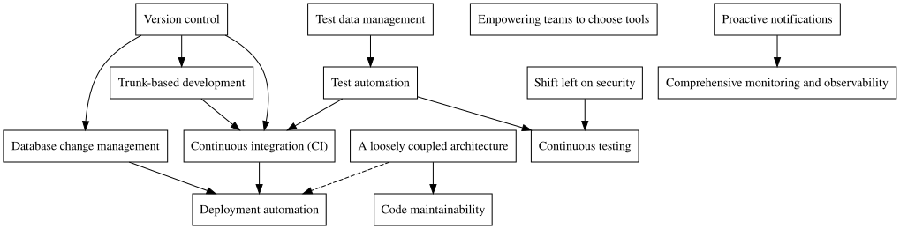

Technical Practices for Continuous Delivery
DORA recommends strengthening a core set of technical practices1 to “drive”2 Continuous Delivery, which in turn “drives” business performance.
1 Go to the website and click on the “Technical Practices” node. Alternatively take a look at their book Accelerate which lays all of this out in detail.
2 Causal inference is a stated assumption. It’s debatable whether this is the case but that’s for another time.
3 See, for example, Extreme Programming Annealed - Glenn Vanderburg
They clearly have internal relationships and, like XP3, there is a dependency graph of interlocking practices. For example, it’s difficult to image trunk-based development without some kind of version control. I was curious what it looked like so I gave it a first stab.

Arrows represent a “supports” relationship. For example: “trunk-based development supports continuous integration”. Some comments:
Version control is at the root of the practices. This is obvious to any practitioner and hardly worth saying. Is anyone not using a VCS in 2020?
A loosely coupled architecture supports deployment automation. Difficulties arise with deployment automation when the codebase is overly monolithic or if distributed components are coupled. Monolithic codebases, even when properly modularised, can result in conflicts. Also overly coupled components result in so called “distributed monoliths” and require complicated deployment sequences. Here we need to distinguish deployment coupling from runtime coupling and talk more about contracts and DDD-style strategic integration patterns.
Database change management supports deployment automation. If you’ve worked in projects without DB change management you’ll know that it can lead to many problems. Before tools such as Flyway and Liquibase were available maintaining database schema in line with the code base was a serious headache. Database changes had to be synchronised with code changes, often resulting in outages, cache problems and delays.
I’ve said that shifting left on security supports continuous testing. Testing is not just about features. How many of us have been stung by security concerns appearing late in the development cycle which could have been solved so much more easily if detected earlier? For example penetration testing is nearly always done as late as possible, for whatever reasons. Exposed services or plain text parameters in a development environment are not an issue but penetration tests flag them immediately.
Though not listed amongst the main practices, performance concerns appear in two separate guises. First, comprehensive monitoring and observability enables performance issues to be made visible and picked up quickly. Second, performance testing is part of any continuous testing strategy.
In common with security, performance concerns raised early in development can actually be an antidote to premature optimisation and lead to better design choices through real feedback. For example, if a query is correct but too slow under production load then that can be dealt with early rather than unnecessary DB scaling in production4. A box for shifting left on performance would fit beautifully between comprehensive monitoring and observability and continuous testing.
4 DB level scaling in the presence of slow queries often goes under the euphemism of “tuning”.
It’s no use building releasable binaries after every commit, multiple times a day, if you are going to deploy to production once a month. This breaks the feedback mechanism and will result in a call for hot-fixes. Hot fixes require separate branches, break TBD and require separate deployment pipelines. Rollback becomes more difficult because ALL the commits in the release will be rolled-back even if they are giving value.
In general I prefer to have a single binary for any version of the software. The corollary is that configuration should be done externally to the binary. There are two main ways to do that. (1) by externalising everything, for example in a properties file in a well know location or (2) packaging configuration inside the binary for ALL environments and configuring a variable with the name of the configuration to load. The first is usually the preferred, if nothing else it means that worries about the security of production keys etc. can be separated from the management of the build itself.